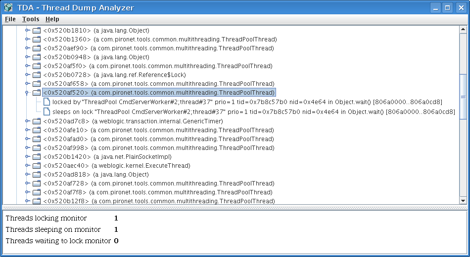
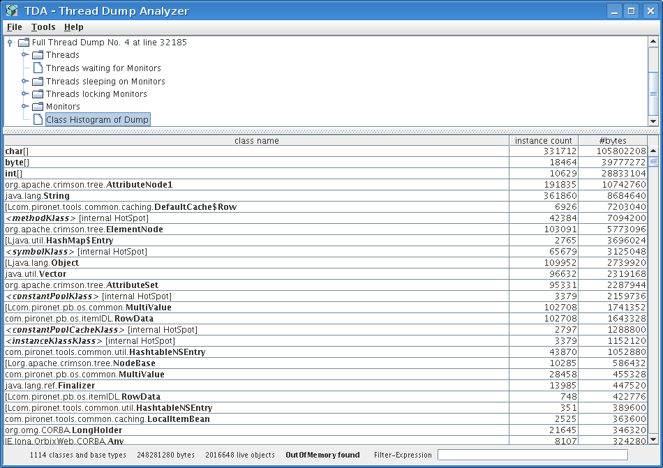

This is a short tutorial on how to use the TDA Thread Dump Analyzer. TDA parses your log files and displays all found thread dumps and class histograms reported from a Sun JVM >= 1.4.x. Class Histograms are not included into the thread dumps by default but need a special JVM-Flag to be dumped with the thread dump. As TDA does everything offline and thread dumps have very low impact on the VM (including the class histogram option), it can be used for production environments. Note: There is a bug in 1.5 preventing the class histogram to be printed if any other then the concurrent mark sweep gc is used.
For having the class histograms included you need to provide the -XX:+PrintClassHistogram option.
Open the log file you want to analyse, TDA will search for all thread dumps in this log file and displays them in a tree. As the Sun JVM thread dump lacks any date information when the dump was requested, you can provide a regular expression in the Preferences which is then used for parsing the lines before the thread dump to get a time stamp.
For each thread dump TDA sums up all found threads and all monitors found in the threads, it also groups threads waiting on, for and locking threads.
If you want to focus on a lock found in a thread you can just mark it, expand the Monitor node of the thread dump and right-click on it and select the tree-search. Paste the marked monitor into the search dialog to get to the information about this monitor. You will get all waiting and all locking threads. Starting here you can easily see if a thread is hanging and holding lock which a lot of other threads are waiting for.

If you added the -XX:+PrintClassHistogram to the VM-Parameters you will also see the class histogram for a thread dump, presented as node of the dump. Here you can examine all objects in the heap at the time of the thread dump. You can sort this view and filter it using the Filter Expression.

If you use the loggc option to log the garbage collection information into a different log file, the heap dump will also go into this log file and the TDA will not find it. For this you need to use Open loggc file... in the File menu (not finished yet). TDA will then parse this file backward and adds the found heap dumps to the thread dumps starting with the last dump. You can added multiple loggc-files, TDA will the continue after the last one where it added a heap dump with the last loggc-logfile.
If your log file contains a lot of thread dumps done during one session of the VM currently analyzed, you can use Find long running threads in the tools menu to extract long running threads from the thread dumps to be done.
For further offline analysis you can use the GC-Viewer found below. If you want to go one step further and do an online analysis with low impact on your (production) environment, you should have a look at the Glassbox Inspector.